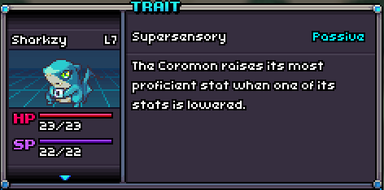

A perfect Nibblegar with Supersensory!
Supersensory
Supersensory is a passive trait that raises one of the Coromon's highest stats with battle modifiers applied when one of its stats are lowered.
If two or more stats are tied for being the highest, one is selected randomly to boost. In the case that its highest stat is lowered, one of the next highest stats will be boosted.
Regardless of how many stages the Coromon's stat is being lowered, the boosted stat will always increase by one stage.